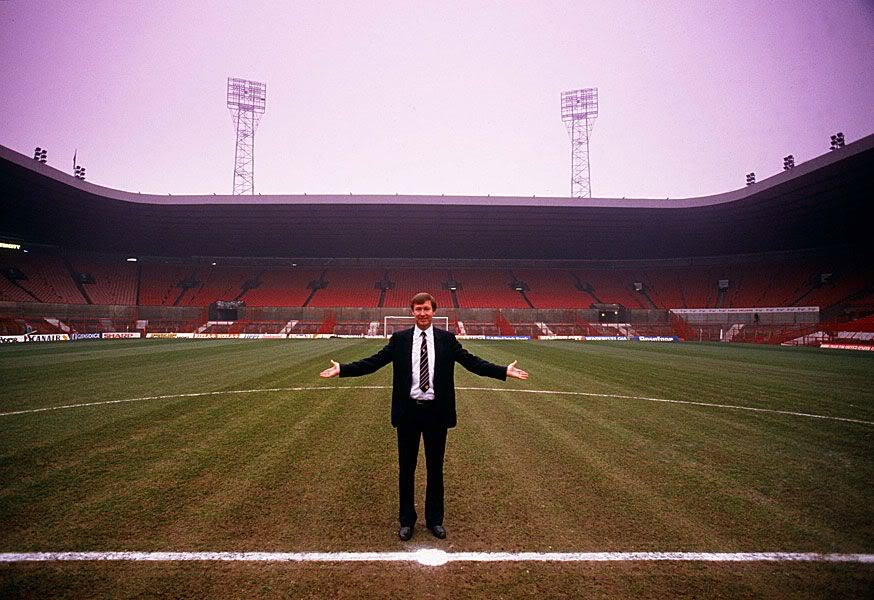
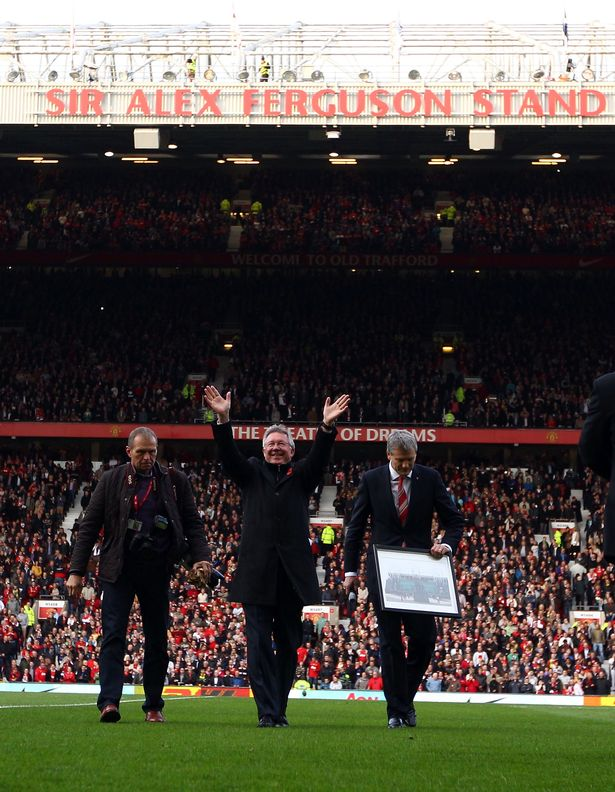

HISTORY
 10/12/2016 10:24, Report by Ivan Spasov
FOOTBAL CLUB MANCHESTER UNITED
Manchester United Football Club is a professional football club based in Old Trafford, Greater Manchester, England, that competes in the Premier League, the top flight of English football. Nicknamed "the Red Devils".
Manchester United was formed in 1878 as Newton Heath LYR Football Club by the Carriage and Wagon department of the Lancashire and Yorkshire Railway (LYR) depot at Newton Heath. The team initially played games against other departments and railway companies, but on 20 November 1880, they competed in their first recorded match; wearing the colours of the railway company – green and gold – they were defeated 6–0 by Bolton Wanderers' reserve team. By 1888, the club had become a founding member of The Combination, a regional football league. Following the league's dissolution after only one season, Newton Heath joined the newly formed Football Alliance, which ran for three seasons before being merged with the Football League. This resulted in the club starting the 1892–93 season in the First Division, by which time it had become independent of the railway company and dropped the "LYR" from its name. After two seasons, the club was relegated to the Second Division. In January 1902, with debts of £2,670 – equivalent to £260,000 in 2016 – the club was served with a winding-up order. Captain Harry Stafford found four local businessmen, including John Henry Davies (who became club president), each willing to invest £500 in return for a direct interest in running the club and who subsequently changed the name; on 24 April 1902, Manchester United was officially born. Under Ernest Mangnall, who assumed managerial duties in 1903, the team finished as Second Division runners-up in 1906 and secured promotion to the First Division, which they won in 1908 – the club's first league title. The following season began with victory in the first ever Charity Shield and ended with the club's first FA Cup title. Manchester United won the First Division for the second time in 1911, but at the end of the following season, Mangnall left the club to join Manchester City. In 1922, three years after the resumption of football following the First World War, the club was relegated to the Second Division, where it remained until regaining promotion in 1925. Relegated again in 1931, Manchester United became a yo-yo club, achieving its all-time lowest position of 20th place in the Second Division in 1934. Following the death of principal benefactor John Henry Davies in October 1927, the club's finances deteriorated to the extent that Manchester United would likely have gone bankrupt had it not been for James W. Gibson, who, in December 1931, invested £2,000 and assumed control of the club. In the 1938–39 season, the last year of football before the Second World War, the club finished 14th in the First Division.
Busby years (1945–1969)In October 1945, the impending resumption of football led to the managerial appointment of Matt Busby, who demanded an unprecedented level of control over team selection, player transfers and training sessions. Busby led the team to second-place league finishes in 1947, 1948 and 1949, and to FA Cup victory in 1948. In 1952, the club won the First Division, its first league title for 41 years. With an average age of 22, the back-to-back title winning side of 1956 were labelled "the Busby Babes" by the media, a testament to Busby's faith in his youth players. In 1957, Manchester United became the first English team to compete in the European Cup, despite objections from The Football League, who had denied Chelsea the same opportunity the previous season. En route to the semi-final, which they lost to Real Madrid, the team recorded a 10–0 victory over Belgian champions Anderlecht, which remains the club's biggest victory on record.The following season, on the way home from a European Cup quarter-final victory against Red Star Belgrade, the aircraft carrying the Manchester United players, officials and journalists crashed while attempting to take off after refuelling in Munich, Germany. The Munich air disaster of 6 February 1958 claimed 23 lives, including those of eight players – Geoff Bent, Roger Byrne, Eddie Colman, Duncan Edwards, Mark Jones, David Pegg, Tommy Taylor and Billy Whelan – and injured several more.Manchester United (1963) Reserve team manager Jimmy Murphy took over as manager while Busby recovered from his injuries and the club's makeshift side reached the FA Cup final, which they lost to Bolton Wanderers. In recognition of the team's tragedy, UEFA invited the club to compete in the 1958–59 European Cup alongside eventual League champions Wolverhampton Wanderers. Despite approval from the FA, the Football League determined that the club should not enter the competition, since it had not qualified. Busby rebuilt the team through the 1960s by signing players such as Denis Law and Pat Crerand, who combined with the next generation of youth players – including George Best – to win the FA Cup in 1963. The following season, they finished second in the league, then won the title in 1965 and 1967. In 1968, Manchester United became the first English (and second British) club to win the European Cup, beating Benfica 4–1 in the final with a team that contained three European Footballers of the Year: Bobby Charlton, Denis Law and George Best. Matt Busby resigned as manager in 1969 and was replaced by the reserve team coach, former Manchester United player Wilf McGuinness.
Ferguson years (1986–2013) - THE MOST SUCCESSFUL MANAGER IN FOOTBALL HISTORYAlex Ferguson and his assistant Archie Knox arrived from Aberdeen on the day of Atkinson's dismissal, and guided the club to an 11th-place finish in the league. Despite a second-place finish in 1987–88, the club was back in 11th place the following season. Reportedly on the verge of being dismissed, victory over Crystal Palace in the 1990 FA Cup Final replay (after a 3–3 draw) saved Ferguson's career. The following season, Manchester United claimed its first Cup Winners' Cup title and competed in the 1991 UEFA Super Cup, beating European Cup holders Red Star Belgrade 1–0 in the final at Old Trafford. A second consecutive League Cup final appearance followed in 1992, in which the team beat Nottingham Forest 1–0 at Wembley. In 1993, the club won its first league title since 1967, and a year later, for the first time since 1957, it won a second consecutive title – alongside the FA Cup – to complete the first "Double" in the club's history. A white football player with short, dark, greying hair. He is wearing a red shirt, white shorts, white socks and white football boots. He is running and has puffed-out cheeks. Ryan Giggs is the most decorated player in English football history. In the 1998–99 season, Manchester United became the first team to win the Premier League, FA Cup and UEFA Champions League – "The Treble" – in the same season. Losing 1–0 going into injury time in the 1999 UEFA Champions League Final, Teddy Sheringham and Ole Gunnar Solskjær scored late goals to claim a dramatic victory over Bayern Munich, in what is considered one of the greatest comebacks of all time. The club also won the Intercontinental Cup after beating Palmeiras 1–0 in Tokyo. Ferguson was subsequently knighted for his services to football. Manchester United won the league again in the 1999–2000 and 2000–01 seasons. The team finished third in 2001–02, before regaining the title in 2002–03. They won the 2003–04 FA Cup, beating Millwall 3–0 in the final at the Millennium Stadium in Cardiff. In the 2005–06 season, Manchester United failed to qualify for the knockout phase of the UEFA Champions League for the first time in over a decade, but recovered to secure a second-place league finish and victory over Wigan Athletic in the 2006 Football League Cup Final. The club regained the Premier League in the 2006–07 and 2007–08 seasons, and completed the European double by beating Chelsea 6–5 on penalties in the 2008 UEFA Champions League Final in Moscow's Luzhniki Stadium. Ryan Giggs made a record 759th appearance for the club in this game, overtaking previous record holder Bobby Charlton.[52] In December 2008, the club won the 2008 FIFA Club World Cup and followed this with the 2008–09 Football League Cup, and its third successive Premier League title. That summer, Cristiano Ronaldo was sold to Real Madrid for a world record £80 million. In 2010, Manchester United defeated Aston Villa 2–1 at Wembley to retain the League Cup, its first successful defence of a knockout cup competition. After finishing as runner-up to Chelsea in the 2009–10 season, United achieved a record 19th league title in 2010–11, securing the championship with a 1–1 away draw against Blackburn Rovers on 14 May 2011. This was extended to 20 league titles in 2012–13, securing the championship with a 3–0 home win against Aston Villa on 22 April 2013.